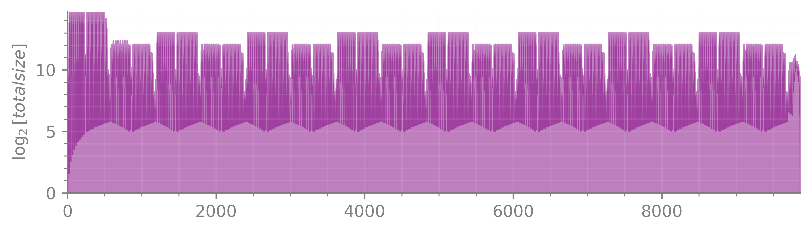
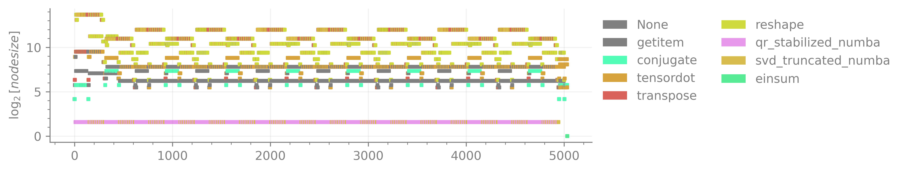
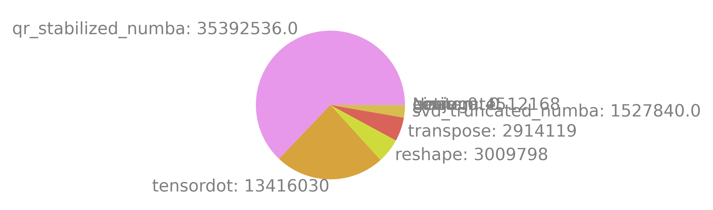

This notebook shows various ways to introspect a autoray.lazy traced
computation, including scaling analysis. The basic steps for that are:
Choose prime numbers for all possible dimension sizes
Trace the computation with
lazy.arrayCall
compute_cost_scalings
%config InlineBackend.figure_formats = ['retina']
import quimb as qu
import quimb.tensor as qtn
from autoray import lazy
from autoray.experimental.complexity_tracing import (
cost_node,
compute_cost,
compute_cost_scalings,
prime_factors,
frequencies,
closest_prime,
)
# all dimensions on intermediates must be different primes so that we can
# decompose the costs for scaling analysis!
p = 2
D = 3
chi = 5
factor_map = {
'p': p,
'D': D,
'chi': chi,
}
psi = qtn.PEPS.from_fill_fn(
lambda shape: lazy.Variable(shape, backend='numpy'),
# (could also call lazy.array on actual data)
10, 10, D, phys_dim=p
)
norm = psi.make_norm()
Z = norm.contract_boundary(
max_bond=chi,
cutoff=0.0,
sequence=['xmin'],
layer_tags=('KET', 'BRA'),
# layer_tags=None gives the single layer
)
basic introspection#
\(W\) is the maximum tensor size or 'width':
W = Z.history_max_size()
W
13122
becase its a single tensor we can analyse its scaling:
prime_factors(W)
[2, 3, 3, 3, 3, 3, 3, 3, 3]
max_size_scaling = {
name: frequencies(prime_factors(W)).get(size, 0)
for name, size in factor_map.items()
}
max_size_scaling
{'p': 1, 'D': 8, 'chi': 0}
\(M\) is 'peak size': maximum concurrent size of all intermediates.
# this is a sum so we can't decompose it
M = Z.history_peak_size()
M
27018
Which is the peak of this graph:
Z.plot_history_size_footprint(log=2)

{kind=link}
(<Figure size 2400x600 with 1 Axes>, <Axes: ylabel='$\\log_2[total size]$'>)
\(C\) is the estimated total flops:
# similarly for the total cost
C = compute_cost(Z)
C
56272536.0
# history by size out
Z.plot_history_functions_scatter(log=2)

{kind=link}
(<Figure size 2400x600 with 1 Axes>, <Axes: ylabel='$\\log_{2}[node size]$'>)
# history by cost
Z.plot_history_functions_scatter(log=2, fn=cost_node)
/mnt/ntfs/Sync/dev/python/autoray/autoray/lazy/draw.py:852: RuntimeWarning: divide by zero encountered in log2
return np.log2(orig_fn(node)) / np.log2(log)
{kind=link}
(<Figure size 2400x600 with 1 Axes>, <Axes: ylabel='$\\log_{2}[custom]$'>)
# combined cost into pie chart
Z.plot_history_stats(fn=cost_node)

{kind=link}
(<Figure size 600x600 with 1 Axes>, <Axes: >)
scaling of every computational node#
For actual complexity we need decomposed scaling of every node:
scalings = compute_cost_scalings(Z, factor_map)
# these are sorted by cost
scalings[:10]
[{'cost': 354294,
'name': 'qr_stabilized_numba',
'freq': 14,
'p': 1,
'D': 11,
'chi': 0},
{'cost': 354294, 'name': 'tensordot', 'freq': 7, 'p': 1, 'D': 11, 'chi': 0},
{'cost': 236196,
'name': 'qr_stabilized_numba',
'freq': 2,
'p': 2,
'D': 10,
'chi': 0},
{'cost': 236196, 'name': 'tensordot', 'freq': 1, 'p': 2, 'D': 10, 'chi': 0},
{'cost': 65610,
'name': 'qr_stabilized_numba',
'freq': 7,
'p': 1,
'D': 8,
'chi': 1},
{'cost': 65610, 'name': 'tensordot', 'freq': 7, 'p': 1, 'D': 8, 'chi': 1},
{'cost': 60750,
'name': 'qr_stabilized_numba',
'freq': 112,
'p': 1,
'D': 5,
'chi': 3},
{'cost': 60750, 'name': 'tensordot', 'freq': 56, 'p': 1, 'D': 5, 'chi': 3},
{'cost': 43740, 'name': 'tensordot', 'freq': 1, 'p': 2, 'D': 7, 'chi': 1},
{'cost': 39366, 'name': 'tensordot', 'freq': 8, 'p': 1, 'D': 9, 'chi': 0}]
If assume some relation like \(\chi \sim D^p\) then you order all nodes. Or you can plot the scaling of each like so:
import matplotlib as mpl
import matplotlib.pyplot as plt
with mpl.style.context(qu.NEUTRAL_STYLE):
plt.scatter(
x=[s['D'] for s in scalings],
y=[s['chi'] for s in scalings],
c=[s['freq'] for s in scalings],
s=400, marker='s', clip_on=False,
alpha=1.0,
)
plt.xlabel('$D$ scaling')
plt.ylabel('$\\chi$ scaling')
plt.xlim(-0.5, None)
plt.ylim(-0.5, None)
plt.gca().set_aspect('equal')
plt.colorbar(label='Repeats', shrink=0.6)
plt.show()
{kind=link}